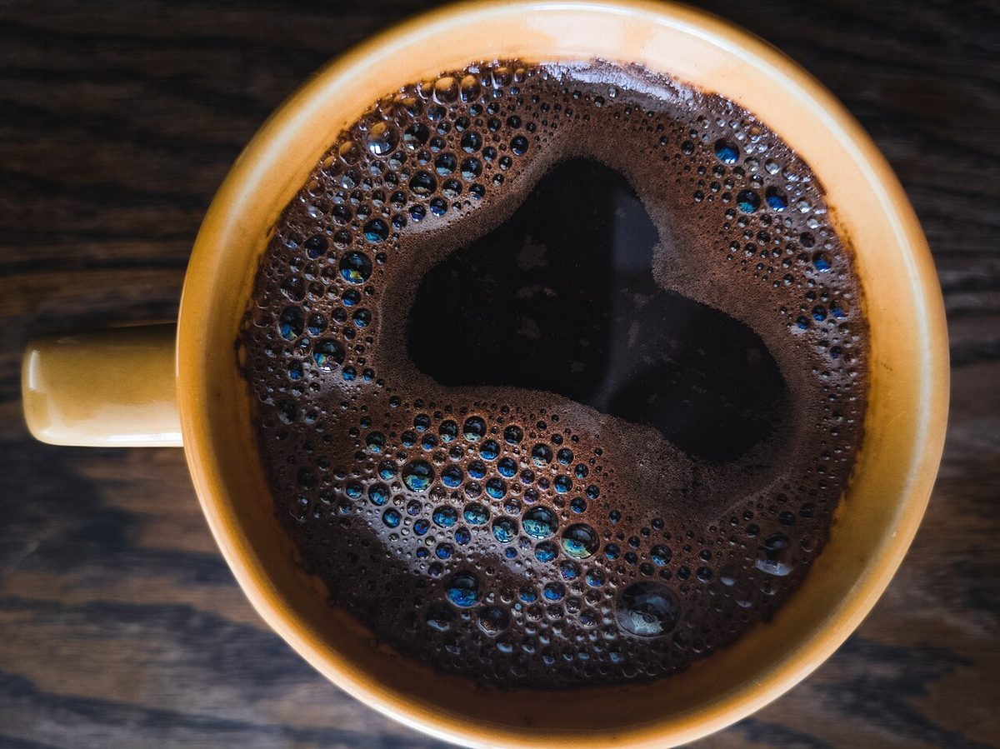
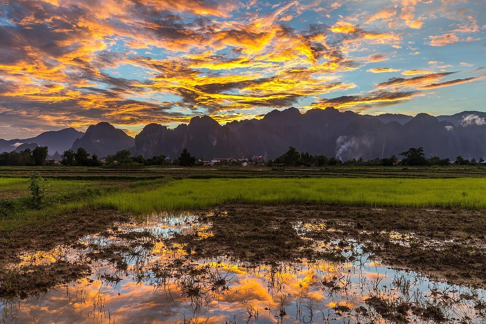

制作側の連想
「くるくる」から、観覧車を思い浮かべました
店名の由来は分かりません。制作側は「くるくる」という響きから、ゆっくり回り続ける観覧車を連想しました。そこでこのサイトは、5つのページを観覧車のゴンドラ5台に見立てています。「1号車」から順番に乗って、ひと回りしてみてください。制作側の連想で、お店の理念・由来とは無関係です。
窓の外(イメージ)
まあるいものを、集めてみました。
写真はお店のものではありません。「丸」をテーマに選んだ、国外・撮影地不明のフリー素材です。




ご案内
お店のこと(確認できたものだけ)
| 所在地 | 〒023-0851 岩手県奥州市水沢南町1-12 |
|---|---|
| 電話 | なし |
| 営業時間 | 準備中 |
| 定休日 | 準備中 |
| ご予約 | 準備中 |
| 駐車場 | 準備中 |
| SNS | Instagram @kuru_cafe_ |